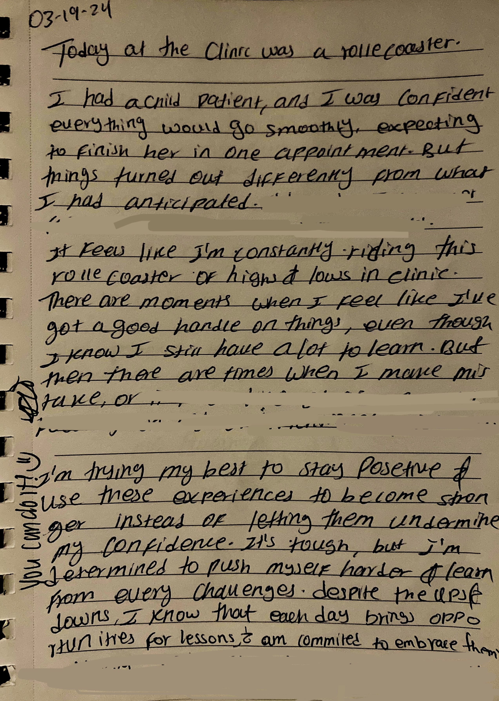
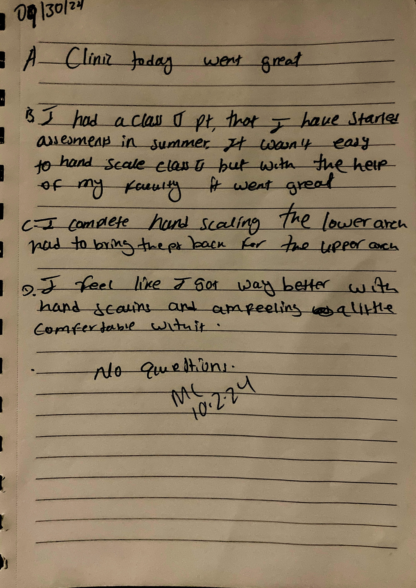
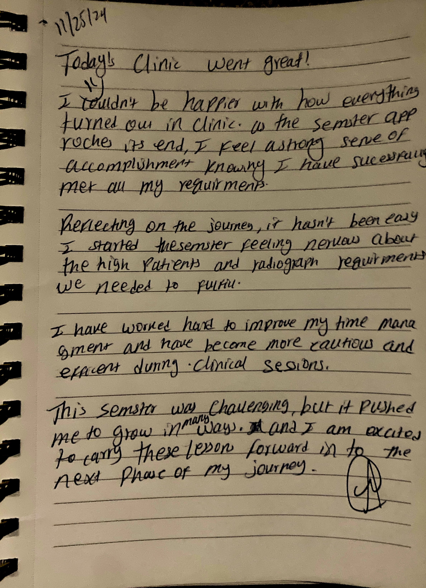

Reflective Journal Entries
Entry 1:Overcoming Initial Challenges
This reflects the beginning of my dental hygiene studies, where I faced numerous challenges and often questioned my abilities. I felt like I was on a constant roller coaster, with high and low moments in the clinic. Despite the ups and downs, I remained determined to push through, learning from every experience. There were moments when I felt confident, but also times when things didn’t go as planned.Over time, I learned how to manage my emotions and expectations, and each experience helped me grow both personally and professionally.

Entry 2: Mastering Clinical Skills
This marks a turning point where I began to see significant improvement in my hand scaling skills. Initially, I struggled with the technique, but with the continuous guidance of my instructors and consistent practice, I gained more confidence and enhanced my abilities. The process taught me the importance of persistence, and I realized that improvement comes with time and practice.

Entry 3: Reflecting on Growth and Accomplishments
This journal entry reflects my sense of accomplishment as I near the end of this fall semester. Although the semester was challenging, I feel a strong sense of growth and achievement. I have successfully completed several requirements, including patient care and radiographs, which were initially daunting. Looking back, I see how far I’ve come in terms of time management and clinical skills. This experience has pushed me to reach the next phase of my dental hygiene journey, and I’m proud of my progress.
